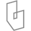

Culture & sport · Contemporary
Katuaq
Key featuresAn undulating wooden wall, inspired by the northern lights, wraps the halls behind a glass front.
More by Schmidt Hammer LassenAll 6 →


More with timberAll 192 →


Find more with
Timber192 buildings →Sculptural form552 buildings →Facade as skin587 buildings →Culture & sport509 buildings →Each opens every building that shares the idea.
Details
- Architect
- Schmidt Hammer Lassen
- Place
- Nuuk, Greenland
- Year
- 1997
- Typology
- Culture & sport
- Movement
- Contemporary
- Region
- Europe
Go deeper
The buildingOfficial website ↗DatabasearchINFORM ↗LocationMap ↗Projects & drawingsArchDaily ↗


Plans & sectionsWikiArquitectura ↗News & featuresDezeen ↗